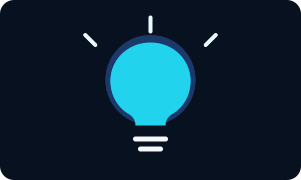

Tus ideas pueden convertirse en proyectos, emprendimientos, campañas o herramientas que aporten a otras personas.

Crear con tecnología significa utilizar herramientas digitales para resolver problemas, comunicar ideas y desarrollar proyectos.
Problema → Idea → Herramienta → Prototipo → Mejora
No necesitas comenzar con un proyecto enorme. Identifica una necesidad cercana y piensa cómo la tecnología podría ayudarte a responderla.